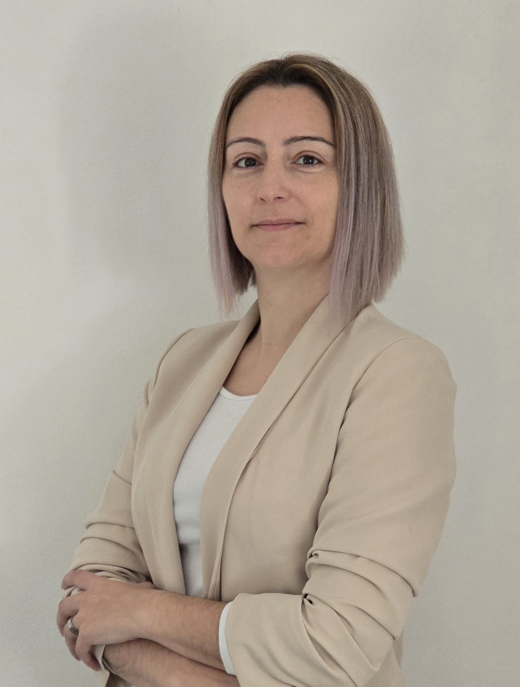

Vera Antunes
Alentejo, Portugal
Upon request
Gender: Female | Nationality: Portuguese

Alentejo, Portugal
Upon request
Gender: Female | Nationality: Portuguese
Author Jewelry Designer & Independent Artist
Background in Jewelry, Technique and Consulting
Certified Modular Training - IEFP
(Programming, Network, DBMS and Multimedia)
António Arroio Artistic School
Native: Portuguese | English: B1
Driver's License: Category B


Creation of visual elements and interface prototyping (Auto-Hunting Pass) for the global gaming community.